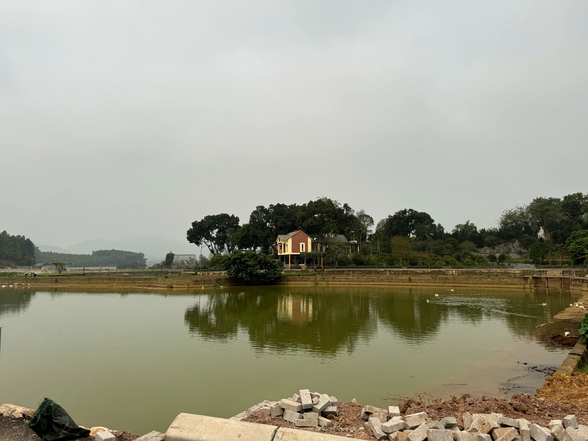

Loại hìnhTypeType
Hồ nước · sôngLakes · RiversLacs · Rivières

Hồ Baibóo nằm bình yên giữa thôn Đồi Dùng và thôn Gốc Báng, là hồ điều hòa sinh thái được khơi nguồn từ những dãy núi đá vôi đặc trưng của vùng bán sơn địa Mỹ Đức. Men theo con đường vòng quanh hồ dài khoảng 4km, du khách bắt gặp bức tranh thiên nhiên thanh bình với mặt nước trong xanh, hàng cây dổi xanh mát ven bờ và những cung đường hoa rực rỡ theo mùa.
Hồ Baibóo là một trong những điểm nhấn trung tâm của du lịch cộng đồng Mường Cốc, gắn liền với Tourism Hub – Nhà văn hóa thôn Đồi Dùng ngay cạnh đó. Không gian khoáng đạt và nguồn nước sạch từ núi đá vôi tạo nên môi trường sinh thái quý giá, phù hợp cho nhiều loại hình trải nghiệm thiên nhiên và văn hóa bản địa.
Baiboo Lake, nestled peacefully between Doi Dung and Goc Bang villages, is an ecological regulating lake fed by the distinctive limestone mountains of My Duc's semi-mountainous region. Following the 4km path around the lake, visitors discover a serene natural tableau: clear blue waters, cool doi trees lining the banks, and vibrant seasonal flower paths.
Baiboo Lake is one of the central highlights of Muong Coc community tourism, closely linked to the adjacent Tourism Hub – Doi Dung village cultural house. Its expansive space and clean water source from the limestone mountains create a valuable ecological environment, suitable for various nature and indigenous cultural experiences.
Le lac Baiboo, niché paisiblement entre les villages de Doi Dung et Goc Bang, est un lac de régulation écologique alimenté par les montagnes calcaires caractéristiques de la région semi-montagneuse de My Duc. En suivant le chemin de 4 km qui l'entoure, les visiteurs découvrent un tableau naturel serein : des eaux bleues claires, de frais arbres doi bordant les rives et de magnifiques chemins fleuris selon les saisons.
Le lac Baiboo est l'un des points d'intérêt centraux du tourisme communautaire de Mường Cốc, lié au Tourism Hub – la maison culturelle du village de Đồi Dùng juste à côté. Son espace vaste et sa source d'eau pure provenant des montagnes calcaires créent un environnement écologique précieux, propice à de nombreux types d'expériences naturelles et culturelles autochtones.


Hồ Baibóo hướng tới trở thành điểm sinh thái – trải nghiệm trung tâm của du lịch cộng đồng Mường Cốc, kết hợp chặt chẽ với Tourism Hub ngay cạnh đó. Định hướng phát triển tập trung vào nâng cấp hạ tầng cung đường ven hồ, phát triển dịch vụ bè nổi bền vững và mở rộng khu cắm trại sinh thái, tạo sinh kế ổn định cho cộng đồng địa phương thông qua du lịch có trách nhiệm. Điểm đến Du lịch cộng đồng Mường Cốc, Xã Mỹ Đức – Thành phố Hà NộiBaiboo Lake aims to be the central ecological and experiential hub for Muong Coc community-based tourism, closely integrated with the adjacent Tourism Hub. Development focuses on upgrading lakeside road infrastructure, fostering sustainable raft services, and expanding the eco-campsite, creating stable livelihoods for the local community through responsible tourism. Muong Coc Community-Based Tourism Destination, My Duc Commune – Hanoi City.Le lac Baibóo aspire à devenir le pôle écologique et expérientiel central du tourisme communautaire de Mường Cốc, en étroite collaboration avec le Tourism Hub voisin. L'orientation du développement se concentre sur l'amélioration de l'infrastructure routière lacustre, le développement de services de radeaux durables et l'expansion du camping écologique, créant des moyens de subsistance stables pour la communauté locale grâce à un tourisme responsable. Destination de Tourisme Communautaire Mường Cốc, Commune de Mỹ Đức – Ville de Hà Nội.